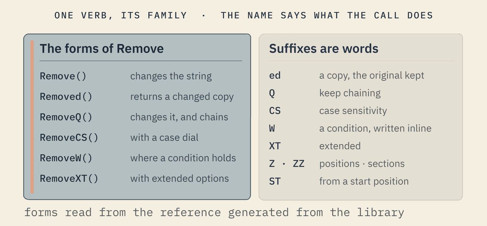
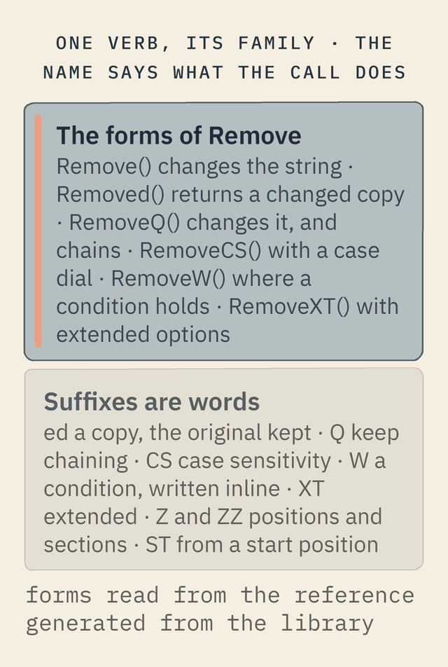

How Softanza is written
Softanza is written so that a name tells you what a call does, a condition can travel inside an argument, a loop gives way to a metaphor, and the library can explain itself. These are conventions held across thousands of methods. This page shows each one running.
A name is a sentence
A method's name is read like a short sentence: the verb says what happens, and the form of the word says how. Remove() changes the object. Removed() returns a changed copy and keeps the original. RemoveQ() changes it and hands it back, so the sentence can go on. Suffixes add meaning the same way in every class: a case dial, a condition, extended options, positions or sections, a start position.


The forms are a system, not a habit: the library reads its own names with a grammar, and an audit lists every verb that lacks one of its three main forms. That is why the string class holds 2,117 methods of its own and the list class 1,583, and why a reader who knows one verb already knows its family.
One verb in three forms: the passive returns a reversed copy and keeps the original, the active changes the list, and the fluent changes it and lets the sentence go on.
o1 = new stzList(L(' "♥1" : "♥3" '))
# the passive form returns a copy and keeps the original
? @@( o1.ItemsReversed() )
? @@( o1.Content() )
# the active form changes the list itself
o1.Reverse()
? @@( o1.Content() )
# the fluent form changes it and lets the sentence go on
o1 = new stzList(L(' "♥1" : "♥3" '))
? o1.ReverseQ().ToStzListOfStrings().ConcatenatedUsing("~")[ "♥3", "♥2", "♥1" ] [ "♥1", "♥2", "♥3" ] [ "♥3", "♥2", "♥1" ] ♥3~♥2~♥1
run on 2026-10-08 21:47 inside the library at commit 4a184e6f0; taken from base/test/list/69_understanding_the_ed_and_q_function_forms.ring(opens in a new tab)
The CS suffix adds a case dial: without it there is no second "arem"; with case ignored, the second one is "AREM", at position 3.
o1 = new stzList([ "arem", "mohsen", "AREM" ]) ? o1.FindNth(2, "arem") ? o1.FindNthCS(2, "arem", :CS = FALSE)
0 3
run on 2026-10-08 21:47 inside the library at commit 4a184e6f0; taken from base/test/list/372_findall.ring(opens in a new tab)
- A verb, never a bare noun. A name says what the call does:
AddCircle(), notCircle(). - Calm verbs. Remove, Clear, Close; never Kill or Destroy.
- Data or object, said by the name. A plain form returns data; the
Qform returns the object, so a chain never guesses what it holds. - A parameter's name says its type.
pcfor text,pnfor a number,pafor a list,pbfor a yes or no.
Small languages inside the arguments
Some arguments are not values but sentences in a small language. A condition such as "{ @item > 5 }" is compiled by the engine and checked against every item, without ever evaluating code: it is safe even when it comes from a user or a file. A named parameter such as :With = "coffee" or :StartingAt = 3 makes a call read like a sentence. Patterns over lists, numbers, tables and time follow the same idea, and near-natural chains let a line of code read as English.
A condition travels as a short text inside the argument; the engine compiles it and answers with the positions, the items or their number.
o = new stzList([ 4, 7, 10, 3, 8 ])
? @@( o.FindW("{ @item > 5 }") )
? @@( o.ItemsW("{ @item > 5 }") )
? o.CountW("{ @item > 5 }")[ 2, 3, 5 ] [ 7, 10, 8 ] 3
run on 2026-10-08 21:47 inside the library at commit 4a184e6f0; taken from base/education/program/courses/elementary-introduction/chapters/07-declare-what-not-how.en.md(opens in a new tab)
Named parameters make a call read as a sentence, and positions count characters, so each bullet sign counts as one.
? Q("tea, rice, tea").Replaced("tea", :With = "coffee")
o1 = new stzString("..•.•..")
? o1.FindNext("•", :StartingAt = 3)
? o1.FindPrevious("•", :StartingAt = 5)coffee, rice, coffee 5 3
run on 2026-10-08 21:47 inside the library at commit 4a184e6f0; taken from base/education/program/courses/elementary-introduction/chapters/03-read-the-name-as-a-sentence.en.md(opens in a new tab)
A near-natural chain reads as the sentence "each has at least two vowels", and when it is false, Why() names the item that failed.
? Q([ "AnnIE", "aeiou" ]).EachQ().AtLeast(2).VowelNB() ? Q([ "AnnIE", "sky" ]).EachQ().AtLeast(2).VowelNB() ? Why()
1
0
no: item 2 ("sky") fails -- no: expected atleast 2, found 0run on 2026-10-08 21:47 inside the library at commit 4a184e6f0; taken from base/test/natural/nnl_narrated.ring(opens in a new tab)
The Softanza way A small language inside an argument says what you want, and the library decides how to get it. The loop, the index and the temporary variable disappear from the page.
Four metaphors instead of loops
A loop hides which move it is making. Softanza names the four moves, and a task is decomposed into them instead.
The walker
Moves through positions: it knows its whole route before it moves, which steps it will visit, which it will skip, and where it stands. It lives in the max layer.
The checker
Asks yes or no questions about the items: all of them, any of them, none of them, where a condition holds.
The yielder
Produces new data from the old: it filters, transforms and reduces, and its core runs in the engine.
The performer
Acts in place: it changes the items it is told to change, where a condition holds.
The yielder, one of the four metaphors: it filters, transforms and adds up the day's takings without a single loop.
oY = new stzYielder([ 12, 0, 30, -5, 18 ]) ? @@( oY.Filter(:IsPositive) ) ? @@( oY.Map(:Double) ) ? oY.Reduce(:Sum)
[ 12, 30, 18 ] [ 24, 0, 60, -10, 36 ] 55
run on 2026-10-08 21:47 inside the library at commit 4a184e6f0; taken from base/education/program/courses/elementary-introduction/chapters/06-walk-ask-produce-act.en.md(opens in a new tab)
Fourteen rules of writing
Everything above is one grammar. Written out as rules, it is fourteen, and a line of code that follows them reads as the thinking behind it. These are readings of the library's own code and articles, stated as rules. Each rule's sample is written below it, not run; the runs that follow show several of them working.
- A value is lifted to its object by Q(), or by its typed lifter when the type is the point.
Q("Niamey ♥") - A scene is a brace block on one object, and the questions are asked inside it.
Q("Niamey ♥") { ? NumberOfChars() ? Uppercased() } - Every printed line carries its answer under #-->; a multi-line answer is drawn as the console shows it.
? o1.CountEmptyStrings() #--> 3 - A parameter is named, and the name reads as English.
Q("tea, rice, tea").Replaced("tea", :With = "coffee") - A chain mirrors the order of thought: one step per line, the dot at the end.
Q("LIFE").LowercaseQ().SpacifyQ(). ... - The form of the verb says what happens: Remove acts, Removed gives a copy, RemoveQ hands the object back.
Remove() Removed() RemoveQ() - Suffixes and prefixes are small and each means one thing: CS, XT, FF, W, Z, ZZ.
FindNthCS(2, "arem", :CS = FALSE) - A function has alternatives for the way a person says it.
NumberOfOccurrenceOfCharLeftSide("-") HowManyOccurrenceOfCharRightSide("-") - Precision over generality, when it costs nothing: NumberOfChars() over Size(); ContainsBoth, ContainsAll, ContainsSome.
Q("one two three").ContainsBoth("one", "three") - Code travels inside an argument as a small string, with @item, @char, @1 as placeholders.
o.FindW("{ @item > 5 }") - Small literal languages live in strings.
L(' "♥1" : "♥3" ') - A sentence may stay near-natural.
_(8).IsA(:Number).Which('IsDoubleOf(4)')._ - A function may be named in any human language.
字符数() - A comment speaks before the code, in the teacher's voice; a test block is framed by /*--- title, pr() and pf().
# the passive form returns a copy and keeps the original
Rules 1, 2 and 9: the value lifted by Q(), a scene where several questions are asked of one object, and NumberOfChars() rather than a vague Size().
# a scene: one object, and the questions asked inside it
Q("Niamey ♥") {
? NumberOfChars()
? Uppercased()
? StartsWith("Nia")
}8 NIAMEY ♥ 1
run on 2026-10-08 21:47 inside the library at commit 4a184e6f0; taken from base/doc/narrations/stz-functions-as-linguistic-expressions.md(opens in a new tab)
Rules 5 and 6: a chain in the order of thought, one step per line with the dot at the end, each verb in its Q form so the sentence goes on.
? Q("LIFE").
LowercaseQ().
SpacifyQ().
CharsQ().
RemoveSpacesQ().
UppercaseQ().
JoinQ().
SpacifyQ().
ReplaceQ("I", :With = AHeart()).
Content()L ♥ F E
run on 2026-10-08 21:47 inside the library at commit 4a184e6f0; taken from base/doc/narrations/stzobject-history-narration.md(opens in a new tab)
Rule 9, precision over generality: ContainsBoth says exactly what is asked, where a general Contains would need a loop.
? Q("one two three").ContainsBoth("one", "three")
? Q([ 1, 2, 3 ]).ContainsBoth(1, 4)1 0
run on 2026-10-08 21:47 inside the library at commit 4a184e6f0; taken from base/string/stzString.ring(opens in a new tab)
Rule 12: a line of code can stay near-natural, a statement the library judges true or false, a question it answers from its knowledge.
# a sentence the library can judge
? _(8).IsA(:Number).Which('IsDoubleOf(4)')._
# and a question it answers from what it was told
StzKnow(:Apple, :Fruit)
? @@( WhatIs(:Apple) )1 [ "fruit" ]
run on 2026-10-08 21:47 inside the library at commit 4a184e6f0; taken from base/test/chainoftruth/16_all_these_return_1.ring(opens in a new tab)
The Softanza way The same rules serve the seven steps of the mental model, one rule or two at each step. The next page sets the two side by side.
Conventions
- Positions start at 1, and 0 means not found. People count from one; so does every layer, the engine included.
- Characters, not bytes. A length or a position counts the letters a person reads, in any script.
- The engine first. Substance goes into the engine, written once, and the language above it is its face.
Q()turns a value into an object. A plain value stays data;Q("text")becomes a string object with its thousands of methods.- Find first, then apply. Where is it, and what do I do there: the same two steps in every area.
- The same verbs for every structure. What works on a string generally works on a list.
- A printed true is 1. The console prints a true answer as 1 and a false one as 0, which is why the outputs on this site read that way.
A library that explains itself
Each method carries, right above its definition, one line saying what it does in the user's words, and optional tags: other names a reader might use, the shape of the answer, an example, related methods. A real one, from the text class:
# The overall tone/mood of the text as "positive", "negative", or "neutral".
#@ aka mood, emotion, feeling, attitude, opinion, how positive or negative
#@ out string: "positive" | "negative" | "neutral"
#@ eg Q("The food was terrible.").Text().Sentiment() #--> "negative"
#@ see SentimentScore, IsPositive, IsNegative
def Sentiment()
A harvester reads these lines, the section titles and the examples promised in the tests. Every object then answers Ask(), HowTo() and ExplainMethod() from them, without any model: the answer is the library's own, and a method that does not exist is refused by name.
Ask the library what it calls what you mean: HowTo composes the call from the naming grammar and says so, and an unknown method is refused by name.
oDoc = StzSelfDocQ("stzList")
? oDoc.HowTo("remove duplicates")
? oDoc.HasMethod("DuplicatesRemoved")
? oDoc.ExplainMethod("NoSuchThing")Q([...]).RemoveDuplicates() -- composed by grammar (remove duplicates) 1 No method 'NoSuchThing' in stzList.
run on 2026-10-08 21:47 inside the library at commit 4a184e6f0; taken from base/education/program/courses/elementary-introduction/chapters/13-the-gap-question.en.md(opens in a new tab)
in construction The convention is fully used on few methods so far: 106 lines name other words for a method, and the harvester does not yet read the example and answer-shape tags. The reference on this site is generated from what exists.
Sources: the forms are described in the narration stz-functions-as-linguistic-expressions.md(opens in a new tab); the condition language is compiled by engine/src/expr.zig(opens in a new tab); the doc-comment convention is set in stz-information-tagging-strategy.md(opens in a new tab). Method counts read from the library at commit 010743cce.